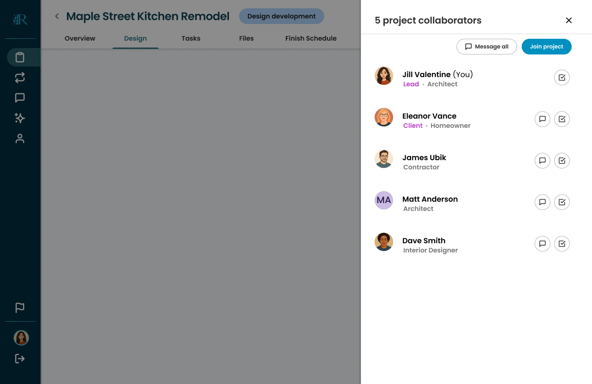
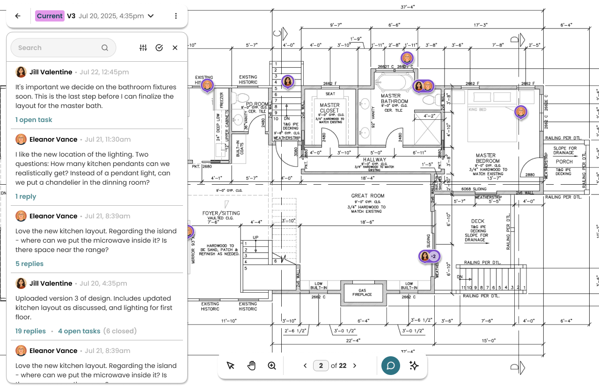
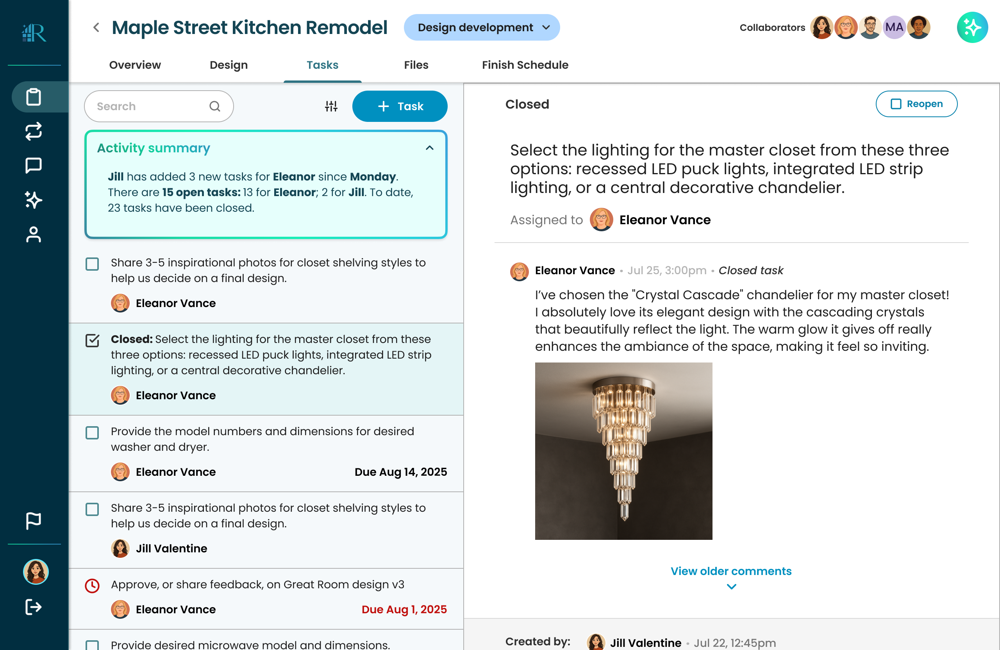

One workspace. Every drawing, decision, and detail.
Renoverse is the AI-native communication platform for architecture project collaboration — a single source of truth where drawings, decisions, and your entire team stay in sync.
And the rest comes built-in.

